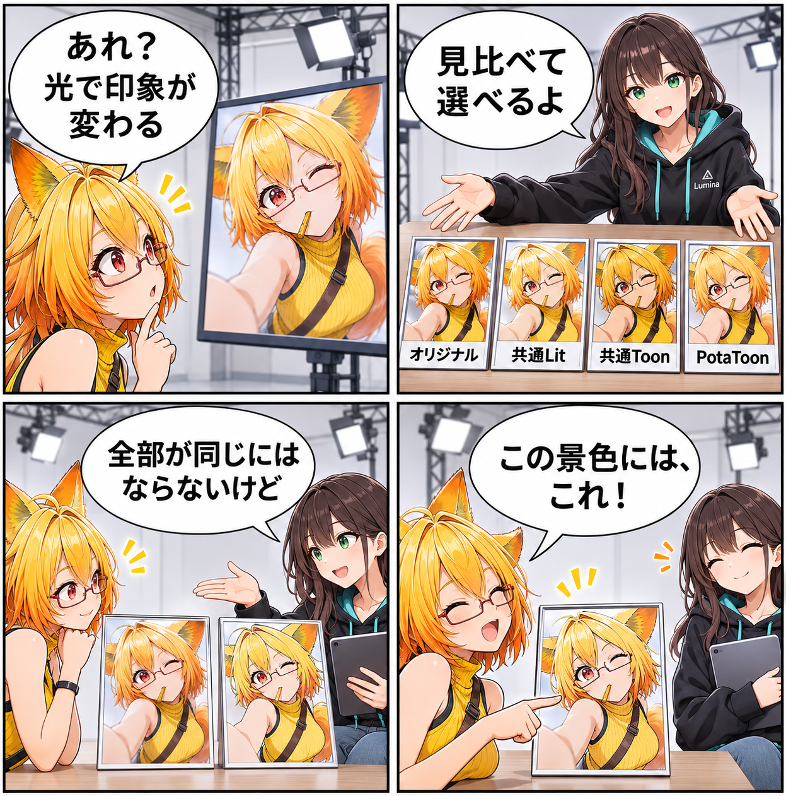

2026.11.12 / Development Log / Feature Spotlight
閑話休題：見た目のモードを、光にあわせて選ぶ
新規実装の報告ではなく、VRASに既にあるアバターの描画モードを紹介します。読み込んだアバターの素材や、作りたい場面に合わせて、見た目の扱い方を選ぶための機能です。
今回は feature-spotlight（機能紹介） です。集計期間は2026-11-11 03:00:00 JSTから2026-11-12 02:59:59 JSTまで、対象はViewerの
main です。集計終了時点のHEADは c33733a41be121b814a1732df8c9eae089ace2ea、期間内コミットは0件でした。Assets/Scenes/MainScene.unity の未コミット差分は、期間内に実装された事実を確定できないため実績には含めていません。
同じアバターを、どう見せるか
VRASでは、アバターの描画を「オリジナル / 共通Lit / 共通Toon / PotaToon」の4モードから選べます。素材が持つ見た目を手がかりにしながら、スタジオの光や背景に合う表現を探すための入口です。
モードは、作品ごとの正解を決めるものではない
オリジナルは素材本来の表現を優先します。共通Lit、共通Toon、PotaToonは、対応できる範囲で素材をそれぞれの描画の流れへ変換します。特殊なシェーダーや透明表現では、同じ見え方を完全に再現できないことがあります。
光を変えたら、もう一度見る
描画モードは、背景やライト、撮影の狙いと切り離せません。ひとつを万能な答えと決めず、同じアバターを見比べて、その場面で納得できる見え方を選べます。
今回の紹介範囲
これは既存の描画モードの紹介です。全シェーダー・全アバターでの完全互換や、当日の実装・品質検証完了を示すものではありません。VRChat Runtimeと同じ描画を保証する機能でもありません。
4コマの話
ろひは、同じアバターが光の下で少しずつ違って見えることに気づきます。ルミナは四つの小さな額を並べ、どれか一つを急いで正解にしないよう案内します。最後は二人で、今日の景色に似合う一枚を選びます。
まとめ
VRASの描画モードは、アバターの素材と場面に合わせて見た目を選ぶ既存機能です。光と背景の中で見比べながら、その一枚に合う表現を探せます。